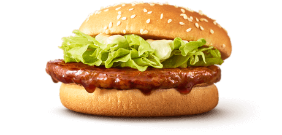

INDEK
- よっしーとは？
- 学歴
- 普段の日常
- 趣味や好きな食べ物
- 将来目指してる将来像
1.よっしーとは？
現在18歳でウィズユーへ通っている男性です
学歴
- 梅津小学校へ入学4/1（月）
- 梅津小学校を卒業3/10（金）
- 梅津中学校へ入学4/1（月）
- 梅津中学校を卒業3/10（金）
- 鳴滝総合支援学校へ入学4/1（月）
- 2023年11/10日全国障害者技能競技大会へ京都府代表として出場
- 惜しくも入賞へは届かず。
- 鳴滝総合支援学校を卒業3/8（金）
↑上記がよっしーの学歴です
普段の日常
- PM.7時起床
- PM.8時ウィズユーへ出発
- pm.10時授業開始
- pm.2時30分授業終了
- pm.4時自宅へ到着
- pm.5~6時まで勉強
- pm.9時就寝
↑上記がよっしーの普段の日常です
その他にも趣味でモンストをしたりサイクリングなどもしています
趣味や好きな食べ物
よっしーの好きな食べ物はテリヤキバーガーと チョコレートです！
- 
理由
テリヤキのソースがたまらないんですよね笑
絶妙にマヨネーズとマッチしていてパンとめっちゃ相性がいいんですよね笑
あれでご飯無限に食べれる気がしてます笑今度してみようかな笑
チョコレートもいいんですよね〜
程よい甘さで何個でもバクバク食べれることができます笑特にビター味が好きです！
作業に集中したい時に食べるとやる気が増加します笑よくおともにして勉強などしています！
カフェインも入ってますし、カカオは体にもいいと聞いたので一石二鳥ですね笑
他にもチョコレートケーキなども大好物です！
誕生日ケーキでは毎年チョコレートケーキにしてもらっていました！
よっしーの趣味
- モンスト！
- WEBデザイナーの勉強（最近ガチ勉中）
- スターバックス（最近）
- サイクリング
- ちいかわ（可愛すぎ）
1.モンスト！
理由
一ヶ月前にモンストを始めました！
モンスト内のガチャアイテムであるオーブをめっちゃ集めてます笑
最近約2000個近く無課金で集めました!（12万円相当）
目標はコラボキャラ運極なので6000個近く集める予定です
2.WEBデザイナーの勉強
理由
後から説明もしますが私の目標はWEBデザイナーになることです!
元々私はpcを使う仕事に憧れていました（俗に言うIT企業）
そこで私は自分もなりたい!と思い始め今年の5月から本格的に勉強を始めました
今はHTMLやcssというWebサイトを作成する時に使う言語を勉強しています
昨日からjavaScriptも学習しようと思いました!（めっちゃ難しいです笑）
初めた頃は全くわかりませんでした、HTML.CSSの意味が理解できませんでした
勉強を重ねていくにつれ少しずつ言語の意味や入力もできるようになっていきました
その瞬間めっちゃ嬉しくてやりがいがすごく感じました
そこで感じたのは努力はとても大切だとと改めて思いました!
これからも切磋琢磨勉強を頑張ろうと思います！
3.サイクリング
理由
去年に元友達のU君と清瀧の峠へサイクリングに出かけました
10キロ近く走りました（正直めちゃくちゃしんどかったw）
ですが走り切った瞬間気分が気持ちよかった！です
しんどいを通り越したら気持ちよさがあると初めて知りました!w
これを境にサイクリングが好きになりました！
本当にお勧めなのでぜひ乗ってみてください！
4.ちいかわ
理由
一人一人のキャラクターが可愛くて癒されるところです！笑
実はちいかわは最近見始めたばっかりであまし詳しくはないんです笑